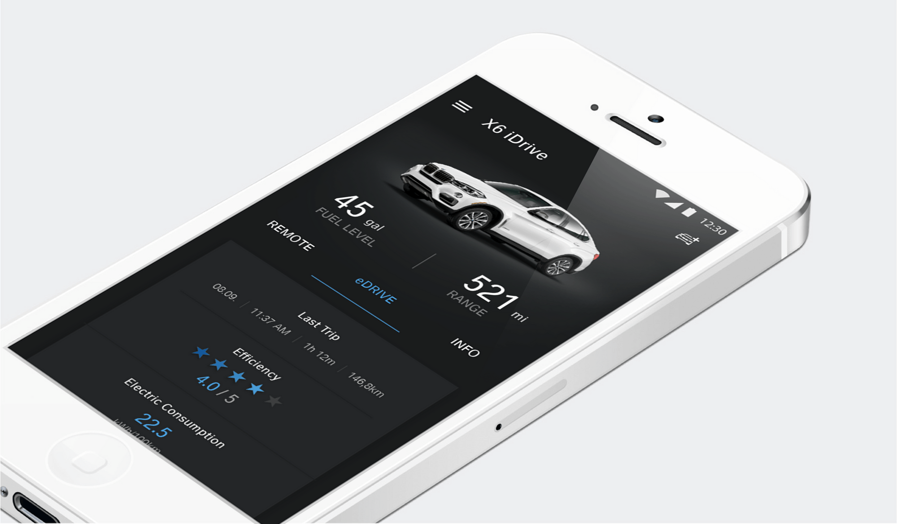
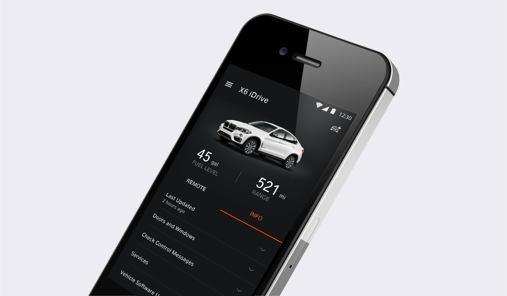
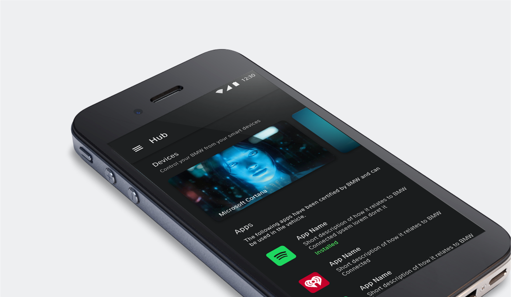
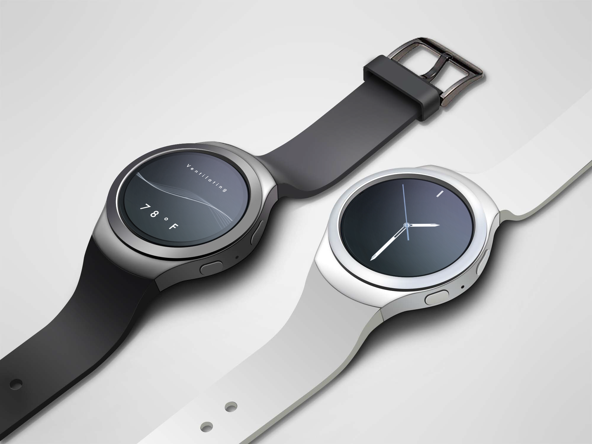

Ownership / Cross-functional processes
Every visual and motion proposal elevates the BMW brand and optimizes a real UX problem — never decoration.
I'm in daily, two-way contact with dev from kickoff through QA to release — always in the build so the shipped product matches the intent, detail for detail.
With my director, I defined the workflow and handoffs between brand, UX, UI, and engineering so high-craft work could ship.
BMW Connected & MINI Connected — one premium experience across four surfaces, each with its own constraints.
Flagship companion app — visual design support and motion behavior.
Owned the look and motion behavior end to end.
Samsung Gear S2 — interface and motion, built with engineering.
In-car, connected-car interactions — eyes on the road.
One premium experience — the same calm, legible craft on every surface.




Three voice states, three deliberate UX decisions — keeping the driver informed, confident, and eyes on the road.
Confirms the system is awake — so the driver knows it's safe to speak, with no wasted attempt.
Reacts to the voice in real time — so the driver trusts they're being heard without looking down.
Communicates progress — so a pause never reads as failure, and the driver waits with confidence.
During my time at BMW, my scope expanded quickly — I was promoted from junior, to mid-level, to senior designer within two years, reflecting the trust I built with design leadership and engineering. Each step came with more ownership across UI, motion, platform work, and implementation support — and it taught me to communicate design rationale clearly, partner closely with engineering, and help high-craft work actually ship. Throughout, I stayed embedded with research, UX, and engineering for the full life of every feature and platform I owned — that constant partnership is how I made sure what shipped was a quality product.
Every visual and motion proposal elevates the BMW brand and optimizes a real UX problem — never decoration.
Getting design proposals greenlit by leadership and engineering leadership.
Brand defined the look. Product defined the experience. I held the balance between them.
Defines the aesthetic & styling — the premium BMW feel.
Defines the optimized experience — what the user needs to do.
Logo loaders, optimistic feedback — the wait never feels uncertain.
Touch ID and tap pulses acknowledge input immediately.
Tip notifications and badging guide users to functionality.
Card and map expansion preserve a cognitive map across screens.
Voice-UI states — ready, listening, working — made visible at a glance.
Responsive, trustworthy feedback — less guessing, less hesitation.
Not "Does this look better?"
Instead, six questions I can answer for anyone in the room.
I stay in the build — sitting with engineering through QA so the shipped product matches the intent, detail for detail.
My job isn't done at the proposal. It's done when the build matches the intent.
Every visual and motion decision earns its place by solving a real user problem.
Staying in sync with engineering to minimize the gap between proposal and build.
Timing, easing, states, and edge cases specified so intent survives the build.
Living documentation that keeps design and engineering aligned, start to ship.
Flexible on execution, firm on the UX solution
When a design was challenged, I never defended it on aesthetics — I grounded it in the UX goal it achieved. That turned pushback into a shared decision about user outcomes, not taste.
This is where I coordinate with engineering the most — every build, reviewed together.
With my director, I defined the workflow and handoffs between brand, UX, UI, and engineering so high-craft work could ship.
Working with my director, I helped define the domains and the handoffs between them — so high-craft work could move from strategy to shipped without losing intent.
Designs shipped.
Designs shipped.
Designs shipped.
The same three things, working together — start to finish.
Every visual and motion proposal elevates the BMW brand and optimizes a real UX problem — never decoration.
I stay in the build — sitting with engineering through QA so the shipped product matches the intent, detail for detail.
With my director, I defined the workflow and handoffs between brand, UX, UI, and engineering so high-craft work could ship.
"At BMW, the best way to approach cross-functional design work was to align everyone around the user problem before debating the solution. I grounded every visual and motion proposal in UX value, business goals, brand expectations, research insight, and engineering feasibility. When constraints came up, I partnered closely with engineering, adapted execution, and protected the core user value — and the work shipped across iOS, Android, and wearable."